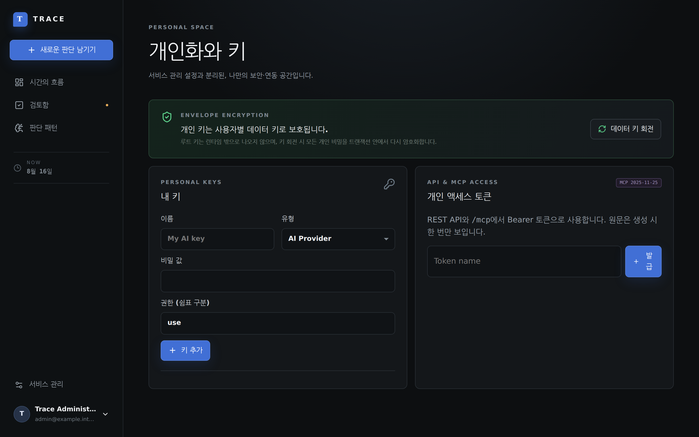

Time Travel Replay
특정 과거 시점으로 슬라이더를 되돌려, 사후 결과를 배제한 채 당시의 지식 상태만으로 판단 품질을 복기합니다.
Trace는 결정 당시의 전제(Assumptions)와 사후 결과를 분리해 기록하고,
시간을 되돌려 당시의 판단 품질을 오롯이 복기하는 엔터프라이즈 플랫폼입니다.
Core Methodology
좋은 판단이 항상 좋은 결과를 보장하지 않으며, 나쁜 결과가 나쁜 판단을 의미하지 않습니다.
특정 과거 시점으로 슬라이더를 되돌려, 사후 결과를 배제한 채 당시의 지식 상태만으로 판단 품질을 복기합니다.
Decision -> Why & Assumptions -> Probabilities -> Milestones -> Lock으로 이어지는 5단계 사고 프레임워크.
Brier Score와 보정 곡선을 통해 예측 확률과 실제 적중률 간의 캘리브레이션 오차를 정량 분석합니다.
사용자별 독립 데이터 키로 암호화되며, 단일 ACID 트랜잭션 내에서 무중단 실시간 키 회전을 지원합니다.
중요 의사결정의 사전 검토 및 승인 대기열 거버넌스와 변조 불가한 감사 로그(Audit Log)를 제공합니다.
Go 단일 바이너리에 React 19 SPA를 완벽 임베딩하여 인터넷이 없는 폐쇄망 환경에서도 100% 자립 구동됩니다.
Full Feature Showcase
클릭하여 고화질 원본 스크린샷과 UI 인터랙션을 확인하세요.

Keycloak OIDC 및 부트스트랩 로그인

진행 중인 의사결정과 타임라인 피드

결정 제목과 핵심 도메인 분류

논리, 숨은 전제, 기각된 대안

기대 확률 및 베팅 확신도

검증 시점 및 반증 기준 정의

변조 불가 암호화 서명 저장

가설 검증 및 마일스톤 상태

마켓 신호 및 시스템 메트릭 추가

실제 결과 및 성공/실패 여부

판단 프로세스 개선점 기록

과거 시점 지식 상태 완벽 회귀

AES-256 데이터 키 회전 및 테마

Brier Score 및 과신/비관 보정

조직 거버넌스 승인/반려 관리

Keycloak OIDC 및 감사 로그
Enterprise Documentation
엔터프라이즈 의사결정자와 아키텍트를 위해 엄격하게 작성된 공식 PDF 문서를 다운로드하여 확인하세요.
결과 편향 배제 철학, 5단계 판단 구조화 프레임워크, 시점별 타임 트래블 리플레이 및 캘리브레이션 분석 가이드.
결정 선언(Create), 증거 누적(Update), 결과 및 회고(Reflect), 팀 승인 거버넌스 워크플로우 실무 지침.
Go 단일 모놀리스 아키텍처, 사용자별 AES-256 봉투 암호화, 시점별 지식 격리 모델 및 불변 감사 로그 백서.
Enterprise Specifications
단일 Go 바이너리로 제공되는 최고의 보안과 오프라인 배포 완결성.
Frequently Asked Questions
Trace의 핵심 기능, 타임 트래블 리플레이 및 보안에 대한 안내입니다.
Ready to decide?
단 4개의 환경변수로 안전한 Decision Intelligence 플랫폼을 기동하세요.